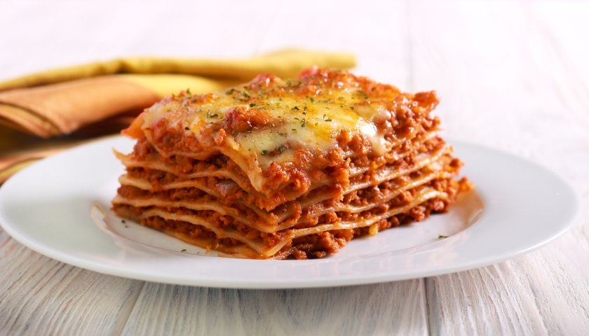

Dicas para preparar a melhor receita de lasanha tradicional Quando você for preparar a massa da lasanha preste muita atenção. Siga atentamente as instruções da caixa. Não deixe mais que o tempo previsto de cozimento. Se isso acontecer, sua lasanha poderá ficar muito mole e comprometer o resultado. Você também pode experimentar usar molho de tomate caseiro na sua lasanha! O preparo é bem simples e o sabor é incrível. E com essa receita e dicas do TudoGostoso você vai fazer um molho de tomate delicioso com apenas 4 ingredientes. Além disso, você também pode experimentar usar tomates pelados ou ainda uma receita de molho branco para deixar a lasanha tradicional ainda mais gostosa. Receita de lasanha tradicional nunca tem certo ou errado, cada um tem a sua, normalmente passada de geração em geração, certo? Mas se você ainda tem dúvidas sobre como fazer lasanha ou de qualquer outro sabor, confira esta matéria do blog do TudoGostoso para saber tudo: como congelar lasanha, como fazer massa de lasanha e mais! Além dessa receita de lasanha tradicional: muitas outras receitas de lasanha no TudoGostoso A lasanha é um prato simples e tradicional, muito fácil de fazer e amado por todos! Confira outras receitas de lasanha no TudoGostoso e invista na versatilidade: tem lasanha de frango, lasanha de berinjela, lasanha de abobrinha, lasanha de batata, lasanha de camarão, lasanha com molho branco, lasanha vegetariana, lasanha low carb, lasanha de queijo e presunto, lasanha de queijo, lasanha vegana, lasanha de espinafre e muito mais! Você pode ver mais receitas de lasanha salgada e doce na matéria que preparamos em nosso blog. Fazer lasanha com massa de pastel é uma forma simples e rápida de preparar sua receita, pois como a massa de pastel já é pré-cozida, fica menos tempo no forno. Por isso, se o tempo estiver curto, invista nessa ideia. Outra ideia simples e rápida é fazer sua lasanha no microondas: ela vai ficar pronta mais rápido e sem precisar ligar o forno! Para você que gosta de filmes sobre gastronomia, a receita de lasanha ficou muito conhecida nos desenhos e filmes do Garfield! O famoso gatinho tem o prato de massa como sua comida favorita. Aprendeu os ingredientes para lasanha? Confira outras receitas de massa Massas são deliciosas, né? Veja no TudoGostoso mais receitas incríveis e fáceis de fazer, como macarrão à carbonara, nhoque de batata, macarrão com bacon e molho branco, macarrão ao alho e óleo, capeletti, macarrão de forno, ravióli caseiro, espaguete à bolonhesa, pizza e muitas outras delícias. Agora que você já sabe como fazer lasanha tradicional, veja também: Receitas com espaguete: veja 35 opções deliciosas com essa massa Como fazer massa de macarrão: confira as dicas e uma receita deliciosa Receita de lasanha fit: como fazer uma versão saudável e deliciosa do tradicional prato italiano.
